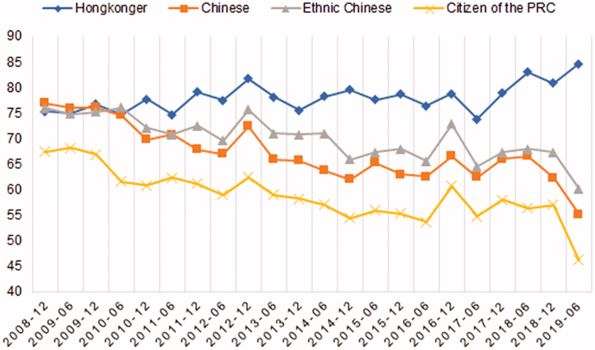

Understanding Hong Kong Nationalism with Topic Network
Justin Chun-ting Ho
Sciences Po
Brief History of Hong Kong
The British colonised
Hong Kong in 1842
The Chinese took over in 1997
Things didn't work out well

Source: Dupré, J.F. (2020). Making Hong Kong Chinese: State Nationalism and its Blowbacks in a Recalcitrant City. Nationalism and Ethnic Politics, 26(1), 8–26.
Data
- Facebook page of key nationalist organisations in Hong Kong
- 8,783 posts, average of 70 characters per post, mostly Chinese but also English
Why Facebook?
- An important platform of political communication (Michael Chan, Hsuan-Ting Chen & Francis L.F. Lee, 2016;
Hsuan-Ting Chen, Michael Chan & Francis L.F. Lee, 2016;
Francis L.F. Lee & Joseph Man Chan, 2015; Gary Tang & Francis L.F. Lee, 2013)
- A major channel of mobilization during the Umbrella Movement (Paul S. N. Lee, Clement Y. K. So & Louis Leung, 2015)
- All nationalist groups use Facebook
Choosing K
- A list of candidate K were produced.
- Topic models were estimated with each candidate K.
- Reading the top-words of all topics of all candidate models.
- In-depth validation of the ten most salient documents of all topics.
Limitation
- Texts serve different purposes
- Count-based approach assumes all texts matter to the discourse equally
- Abundance is not equal to importance
Discourse as Network
- Concepts within a discourse do not exist in isolation, they are dependent on each other in various ways
- Discourse as network phenomenon
- Core concepts are conecepts that unite different concepts into a coherent whole
Generating the Topic Network
- Pearson’s correlation coefficients between the beta values of all topics
- Retain only the strongest 20% of the edges
- Identify core nodes using degree centrality
China Threat
- Recurring narractives throughout the study period
- Stalled democratisation
- Protest arrests
- China as an outside invader, Hong Kong government as a mere extension of China’s ruling arm
Political Controversies
- Overlapping pattern denotes changing focus of discussion
- Started as economic issues
- Quickly overtaken by the discussion on various issues related to political rights
- China as a threat to liberal values and the Hong Kong way of life
Localism and Nationalism
- Decreasing trend of Localism, an increasing trend of Hong Kong Nation
- Localism as protecting Hong Kong’s interests and identity
- Adopting of the rhetoric of (civic) nationalism
Internationalism and Protest
- Decreasing trend of Struggle & Resistance, an increasing trend of International Support
- "Valiant struggle" (勇武抗爭)
- Mustering international support
Thank You!
Twitter: @justin_ct_ho
Github: justinchuntingho
Email: justin.chunting.ho@sciencespo.fr